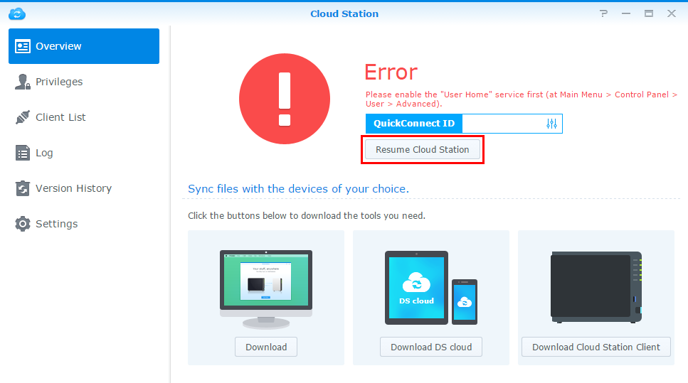
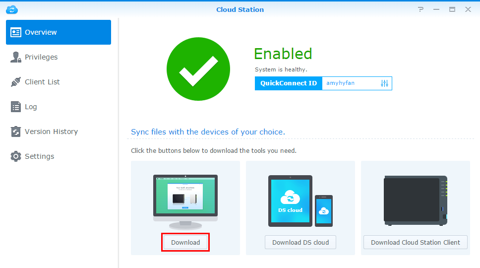
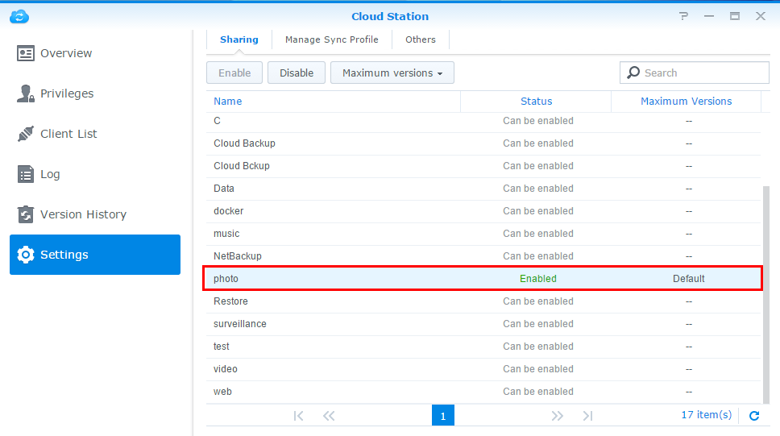
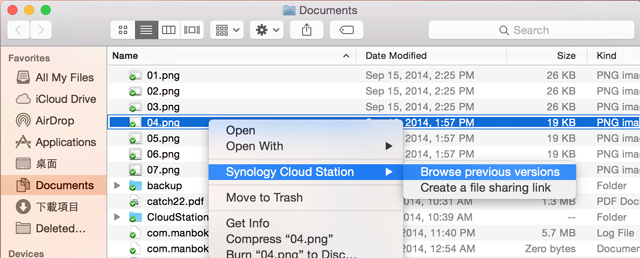
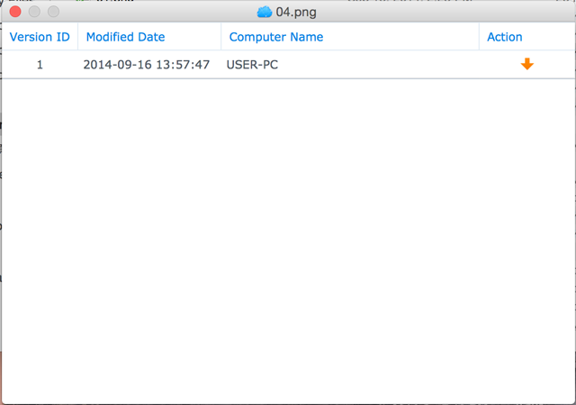

Überblick
Cloud Station ist nicht nur eine hoch entwickelte, Plattform-übergreifende Synchronisierungssoftware, sondern Benutzer können sie als intelligentes Mittel zur Sicherung ihres PCs verwenden. Dies sind nur einige Vorteile, wenn Sie Cloud Station als Ihren Begleiter für die Datensicherung nutzen. Die Echtzeit-Replikation bietet vor allem einen besseren RPO, das heißt einen kürzeren Zeitraum, in dem Daten auf Ihrem PC aufgrund eines größeren Zwischenfalls (nicht wiederherstellbar) verloren gehen könnten. Sie funktioniert nicht nur sofort, sie hilft Ihnen auch, im Vergleich zu herkömmlichen Datensicherungen viel Bandbreite zu sparen, da diese zu einem bestimmten Zeitpunkt eine große Bandbreite nutzen. Sie können ganz einfach die Dateien innerhalb desselben Ordners filtern, die Sie nicht sichern möchten, indem Sie die Dateigröße oder den Dateityp auf Ihrem PC-Client festlegen. Cloud Station kann auch bis zu 32 Verlaufsversionen einer einzelnen Datei behalten, die mit Cloud Station von der Serverseite (NAS) auf einem PC-Client wiederhergestellt werden können.
1. Cloud Station auf dem eCore Server einrichten
- Melden Sie sich bei DSM mit einem Konto an, das zur Gruppe administrator gehört.
- Starten Sie Cloud Station.
- Wenn Sie die Benutzer-Home-Funktion noch nicht aktiviert haben, werden Sie aufgefordert, dies zu tun. Klicken Sie auf OK.
- Sie werden zur Seite "Benutzereinstellungen" weitergeleitet. Aktivieren Sie Benutzer-Homes und klicken Sie auf Übernehmen.
- Gehen Sie jetzt zurück zu Cloud Station, dann werden Sie aufgefordert, sie zu aktivieren. Klicken Sie auf Ja. 
- Gehen Sie zu Berechtigungen und geben Sie an, welche Benutzer Cloud Station verwenden dürfen. Klicken Sie auf Speichern.
- Richten Sie zur Datensicherung auf Ihrem eCore Server einen gemeinsamen Ordner ein. Dazu gehen Sie zu Systemsteuerung > Freigegebener Ordner und klicken auf Erstellen.
- Benennen Sie den Ordner, und geben Sie die entsprechenden Daten ein. Klicken Sie auf OK. Der Ordner im Beispiel heißt Datensicherung.
- Geben Sie auf der Registerkarte Berechtigungen an, welche Benutzer auf den Ordner zugreifen können. Zum Beispiel erteilen wir dem Ordner admin Lese-/Schreib-Berechtigungen. Klicken Sie auf OK.
- Gehen Sie zu Cloud Station > Einstellungen > Freigabe, wählen Sie den Ordner Sicherung aus und klicken Sie auf Aktivieren.


2. Cloud Station auf Ihrem Windows PC einrichten
Folgen Sie den Schritten, um Cloud Station auf Ihrem Mac oder PC einzurichten
2,1 Für PC
- Gehen Sie zu Cloud Station > Übersicht und klicken Sie auf die Schaltfläche Download. 
- Klicken Sie auf die Schaltfläche, um Cloud Station für Windows PC herunterzuladen. (Sie können Cloud Station auch im Synology Download-Zentrum herunterladen.)
- Starten Sie das Installationsprogramm auf Ihrem Computer, und folgen Sie den Anweisungen zur Installation von Cloud Station.
- Führen Sie nach der Installation Cloud Station auf Ihrem Computer aus. Klicken Sie auf Jetzt starten.
- Geben Sie die Adresse für den eCore Server, auf dem Cloud Station läuft (oder die QuickConnect-ID), sowie den Benutzernamen und das Kennwort ein. (Sie können auch rechts auf das Suchsymbol klicken, sodass Cloud Station automatisch nach einem anderen eCore Server in Ihrem LAN sucht.) Klicken Sie auf Weiter.
- Wählen Sie aus, wie Sie Ihre Aufgabe einrichten möchten (hier wählen Wir Erweitertes Setup aus, da wir einen Ordner speziell für die Datensicherung einrichten.) Klicken Sie auf Weiter.
- Wählen Sie einen Ordner auf Ihrem Computer aus, der kontinuierlich mit dem zuvor auf Ihrem eCore Server erstellten Ordner "Sicherung" synchronisiert werden soll. Klicken Sie auf Weiter.
- Klicken Sie zum Beenden des Setups auf Fertig.


Weitere Aufgabe erstellen:
- Gehen Sie zu Cloud Station > Einstellungen und aktivieren Sie für diese neue Aufgabe einen freigegebenen Ordner. Mein Beispiel ist photo. Vergewissern Sie sich, dass Sie Lese-/Schreibrechte für photo haben. 
- Gehen Sie wieder zu Cloud Station auf Ihrem PC und klicken Sie auf Erstellen.
- Wählen Sie einen eCore Server für Ihre neue Aufgabe aus. Hier wählen wir Angeschlossener eCore Server aus, weil wir eine weitere Aufgabe für denselben eCore Server erstellen. Klicken Sie auf Weiter.
- Wählen Sie Erweitertes Setup aus und folgen Sie dem Assistenten, um die Einrichtung fortzusetzen.


2.2 Für Mac
- Gehen Sie zu Cloud Station > Übersicht und klicken Sie auf die Schaltfläche Download.
- Klicken Sie auf die Schaltfläche, um Cloud Station für Mac herunterzuladen. (Sie können Cloud Station auch im Synology Download-Zentrum herunterladen.)
- Starten Sie das Installationsprogramm auf Ihrem Computer, und folgen Sie den Anweisungen zur Installation von Cloud Station.
- Führen Sie nach der Installation Cloud Station auf Ihrem Computer aus. Klicken Sie auf Jetzt starten.
- Geben Sie die Adresse für den eCore Server, auf dem Cloud Station läuft (oder die QuickConnect-ID), sowie den Benutzernamen und das Kennwort ein. (Sie können auch rechts auf das Suchsymbol klicken, sodass Cloud Station automatisch nach einem anderen eCore Server in Ihrem LAN sucht.) Klicken Sie auf Weiter.
- Wählen Sie aus, wie Sie Ihre Aufgabe einrichten möchten (hier wählen Wir Erweitertes Setup aus, da wir einen Ordner speziell für die Datensicherung einrichten.) Klicken Sie auf Weiter.
- Wählen Sie einen Ordner auf Ihrem Computer aus, der kontinuierlich mit dem zuvor auf Ihrem eCore Server erstellten Ordner "Sicherung" synchronisiert werden soll. Klicken Sie auf Weiter.
- Klicken Sie zum Beenden des Setups auf Fertig.


Erstellen einer neuen Aufgabe:
- Gehen Sie zu Cloud Station > Einstellungen und aktivieren Sie für diese neue Aufgabe einen freigegebenen Ordner. Mein Beispiel ist photo. Vergewissern Sie sich, dass Sie Lese-/Schreibrechte für photo haben.
- Gehen Sie wieder zu Cloud Station auf Ihrem Computer und klicken Sie auf Erstellen.
- Wählen Sie einen eCore Server für Ihre neue Aufgabe aus. Hier wählen wir Angeschlossener eCore Server aus, weil wir eine weitere Aufgabe für denselben eCore Server erstellen. Klicken Sie auf Weiter.
- Wählen Sie Erweitertes Setup aus und folgen Sie dem Assistenten, um die Einrichtung fortzusetzen.


3. Daten von Cloud Station abrufen
Wenn Sie eine Datei versehentlich entfernen oder überschreiben, können Sie sie mit Cloud Station ganz einfach wiederherstellen.
4.1 So laden Sie eine frühere Version einer synchronisierten Datei auf den PC herunter
- Klicken Sie auf das Cloud Station-Symbol in der Taskleiste und anschließend auf das Ordnersymbol.
- Rechtsklicken Sie auf Ihre ausgewählte Datei und wählen Sie Synology Cloud Station > Frühere Versionen durchsuchen.
- Suchen Sie die Version, die Sie herunterladen möchten, und klicken Sie auf das Download-Symbol.
- Geben Sie den Dateinamen ein und wählen Sie das Ziel aus, um die Datei zu speichern.


4.1 So laden Sie eine frühere Version einer synchronisierten Datei auf den Mac herunter
- Klicken Sie auf das Cloud Station-Symbol in der Taskleiste und anschließend auf das Ordnersymbol.
- Rechtsklicken Sie auf Ihre ausgewählte Datei und wählen Sie Synology Cloud Station > Frühere Versionen durchsuchen. 
- Suchen Sie die Version, die Sie herunterladen möchten, und klicken Sie auf das Download-Symbol. 
- Geben Sie den Dateinamen ein und wählen Sie das Ziel aus, um die Datei zu speichern.

4.3 So laden Sie eine frühere Version einer synchronisierten Datei von Cloud Station herunter oder stellen sie wieder her
- Gehen Sie zu Cloud Station > Versionsverlauf und wählen Sie den vorher erstellten Ordner Sicherung aus.
- Wählen Sie die Datei, die Sie abrufen möchten, und klicken Sie auf Aktion > Frühere Versionen durchsuchen.
- Wählen Sie die Version der Datei, die Sie herunterladen möchten, und klicken Sie auf Herunterladen. Falls Sie sich allerdings sicher sind, dass die ausgewählte Version wiederhergestellt werden soll, klicken Sie auf Wiederherstellen, dann wird Ihre aktuelle Version überschrieben.


4. Wichtige Hinweise
- Behalten Sie immer historische Versionen bei, falls eine Datei zufällig entfernt oder überschrieben wird.
- Unter „Globale Einstellungen“ können Sie konfigurieren, ob eine Datei von Ihrem NAS erneut abgerufen oder auf Ihrem NAS gelöscht wird, wenn Sie eine Datei auf Ihrem PC löschen.
5. Weiterer Schutz Ihrer Daten
Wenn Sie weitere Informationen über Möglichkeiten zum Schutz und zur Sicherung Ihrer Daten erhalten möchten, klicken Sie hier, um ausführliche Anleitungen über andere Datensicherungsdienste anzuzeigen, die von DSM angeboten werden.